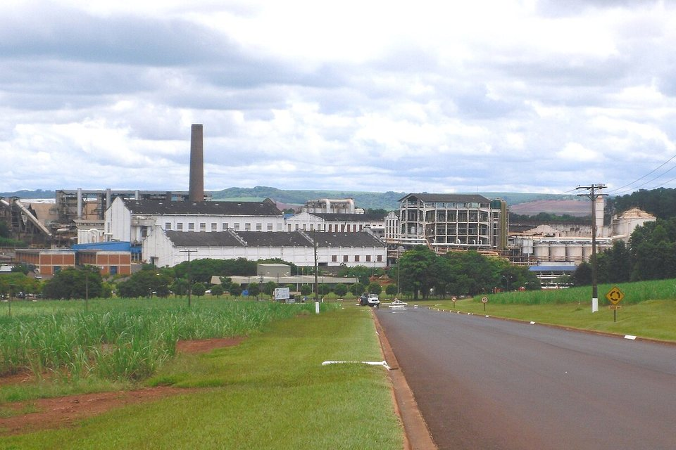
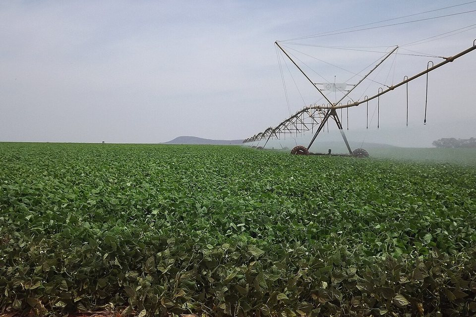
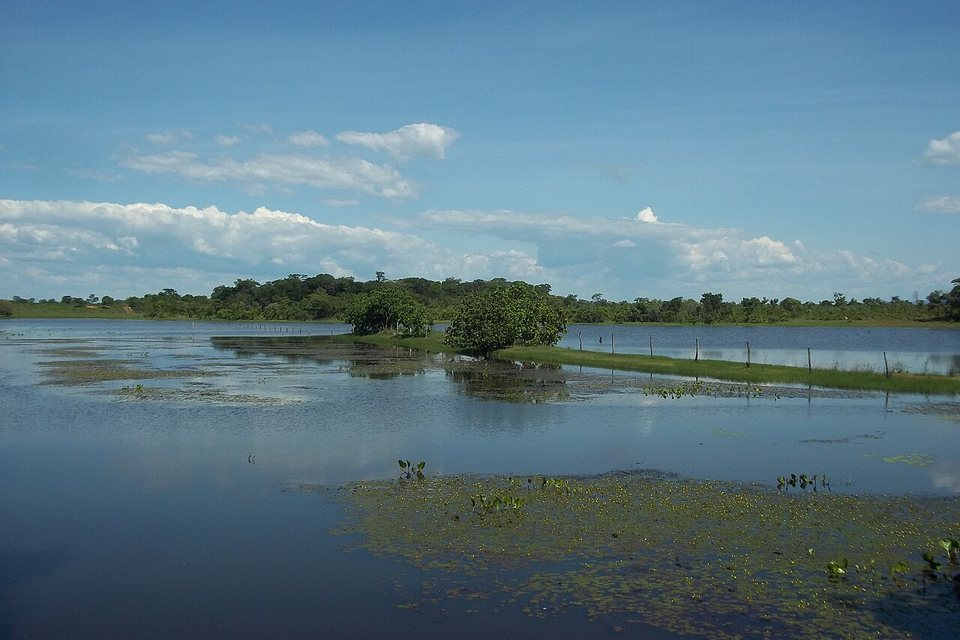
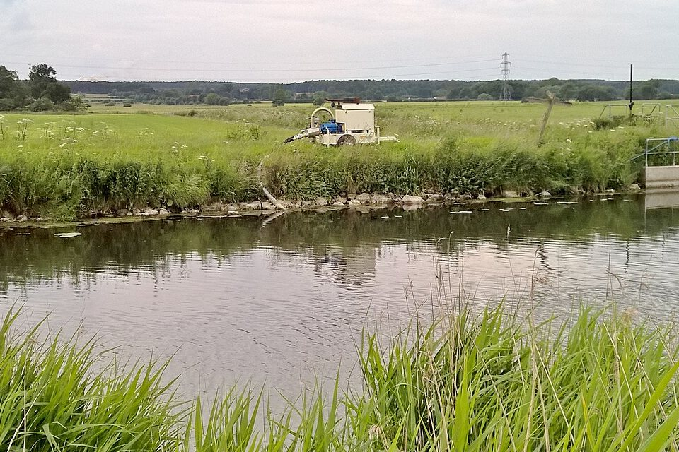

Licenciamento e regularização ambiental
Outorga de uso da água: indústria, irrigação, barramento e captação direta
Outorga e registro de uso insignificante para indústria, irrigação, barramento, captação direta em rio e poço, no Sistema Veredas (SEMAD-GO) ou na ANA.
O que é
Quem capta água de rio ou poço, constrói barragem ou lança efluente precisa de autorização para usar a água. Em rio estadual, o pedido é feito na SEMAD-GO pelo Sistema Veredas; em rio federal, na ANA. Calculamos a demanda, verificamos a disponibilidade da bacia, preparamos mapas e memoriais e acompanhamos o processo até a portaria. Quando o uso é pequeno, fazemos o registro de uso insignificante, que é gratuito e mais simples.
Modalidades

Foto: Elmschrat Outorga para indústria
Água de poço tubular ou de rio para processo, limpeza e consumo, e lançamento do efluente tratado. Fazemos o balanço hídrico da planta e o pedido de cada ponto.

Foto: Tiago Firmino B. Outorga para irrigação
Pivô central, gotejamento ou aspersão. Calculamos a necessidade da cultura, a vazão e o horário de bombeamento por mês, que é o que a SEMAD avalia.

Foto: charlen Outorga para barramento
Barragens e represas para irrigação, dessedentação animal ou reserva. Levantamento topográfico, área alagada, volume, vazão a manter no rio e enquadramento na segurança de barragens.

Foto: Chris Morgan Outorga para captação direta
Bombeamento direto do rio, córrego ou nascente, sem barragem. Localizamos o ponto, medimos ou estimamos a vazão e fazemos o pedido ou o registro de uso insignificante.
Créditos das fotos
Via Wikimedia Commons, recortadas.
Quando é exigido
- Captação em rio, córrego, nascente ou poço acima do limite de uso insignificante.
- Barragens e represas, inclusive para irrigação e bebedouro do gado.
- Lançamento de efluente em curso d'água.
- Licenciamento ambiental da atividade, que costuma pedir a outorga ou o registro.
- Usos insignificantes, segundo a SEMAD-GO: captação de até 1 L/s, barragem com até 12.000 m² de área alagada e poço rural de até 1 L/s por até 14 horas por dia. Esses usos também precisam ser registrados.
O que entregamos
- Cálculo da demanda de água por mês e por ponto de uso.
- Estudo de disponibilidade hídrica da bacia.
- Mapas, plantas e memoriais dos pontos de captação, barramento e lançamento.
- Pedido de outorga ou registro de uso insignificante no Sistema Veredas ou na ANA.
- Acompanhamento até a portaria e controle das condicionantes.
Documentos que você envia
- Matrícula e recibo do CAR.
- Localização dos pontos de uso (pode ser um ponto no mapa ou KML).
- Dados da bomba, do poço ou do pivô, se já existirem.
- Área irrigada e culturas, no caso de irrigação.
Normas de referência
- Lei 9.433/1997 (Política Nacional de Recursos Hídricos)
- Lei estadual (GO) 13.123/1997 (Política Estadual de Recursos Hídricos)
- Lei 12.334/2010 (Segurança de Barragens), quando aplicável
- IN SEMAD 19/2026 (barragens em empreendimentos agropecuários)